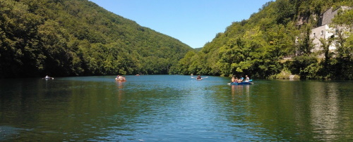

Lillafüreden a nagyon finom ebéd után ketté vált a csoport, a csoport egyik fele ment a vízeséshez, a másik pedig a csónakázó tóhoz.
A csónakázó tó, azaz a Hámori-tó egy mesterségesen megnagyobbított tó, Az átlagos mélysége kilenc méter, vagyis nagyobb, mint a Balatoné.
A tónak eleinte nem is volt neve, csak Taj néven illették (a német Teich – tó szó után). Viszont később már a mai ismert nevén említik.
